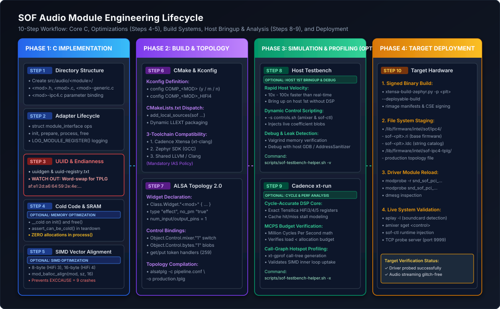
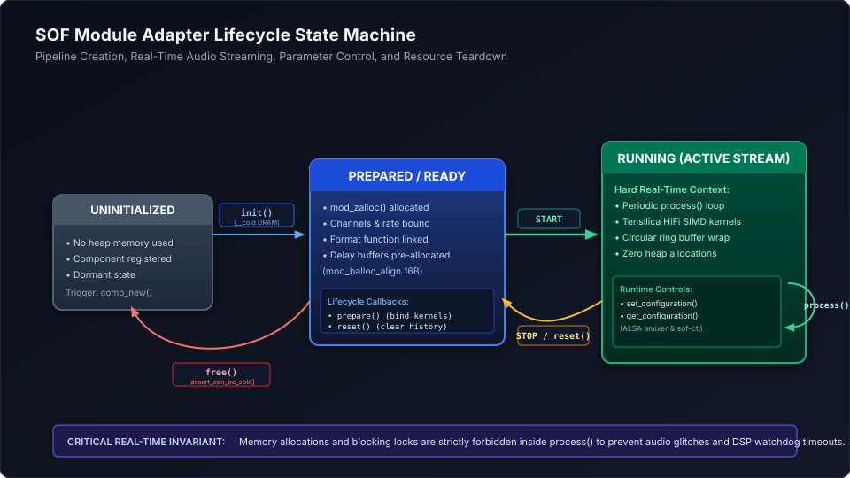

How-To Guide: Creating and Integrating Audio Processing Modules#
Sound Open Firmware (SOF) provides a modular, extensible audio processing architecture based on the Module Adapter Framework. This framework enables developers to author new digital signal processing (DSP) components, port existing third-party audio algorithms, compile modules either statically into the base firmware or dynamically as loadable extensions (LLEXT Dynamic Loadable Modules Architecture), and deploy them onto diverse DSP architectures (Intel cAVS/ACE, NXP i.MX, and embedded microcontrollers).
This comprehensive, step-by-step developer guide walks through the end-to-end engineering workflow for creating, configuring, building, testing, and deploying a new audio module.
—
End-to-End Workflow Overview#
Creating and integrating an audio module follows a structured 10-step development lifecycle. While the full process covers end-to-end component creation, specific stages are optional optimizations or development velocity boosters:
Core Implementation Path (Mandatory): Steps 1, 2, 3, 6, 7, and 10 form the essential path required to author, configure, build, and deploy a functioning audio component on target hardware.
Optimization Stages (Steps 4 & 5 - Optional): Steps 4 (Memory Tiering & Cold Code) and 5 (SIMD Alignment & Vectorization) are optimizations. During initial functional prototyping or algorithmic bringup, developers can use standard portable C scalar code and default memory allocations. Once functional correctness is established, apply cold-code memory tiering (Step 4) to conserve scarce DSP SRAM and implement SIMD vectorization with strict byte alignment (Step 5) to minimize MCPS and meet production performance targets.
Host Bringup, Velocity & Performance Analysis (Steps 8 & 9 - Optional): Steps 8 (Host Testbench) and 9 (Cadence xt-run) are optional stages designed for debugging, performance analysis, and accelerating development velocity. Instead of waiting for slow embedded flash cycles, driver reloads, or board reboots, developers can bring up and validate their module on the host workstation first (Step 8) at 10x-100x real-time speed. Cadence
xt-run(Step 9) provides cycle-accurate MCPS budget verification and hotspot profiling before deploying to physical DSP hardware.
{kind=link}

Figure 221 Figure 320: End-to-end engineering workflow for creating and integrating an audio module in Sound Open Firmware.#
Step |
Stage Name |
Requirement |
Primary Responsibilities & Artifacts |
|---|---|---|---|
Step 1 |
Directory Structure & Taxonomy |
Mandatory |
Establish module source tree under |
Step 2 |
Headers & Interface Callbacks |
Mandatory |
Implement |
Step 3 |
UUID Generation & Endianness |
Mandatory |
Generate RFC 4122 UUID, register in |
Step 4 |
Memory Placement & Cold Code |
Optional (Optimization) |
Optimize scarce DSP SRAM by isolating cold setup routines ( |
Step 5 |
Vector Alignment & SIMD Kernels |
Optional (Optimization) |
Guarantee 8/16/32-byte data alignment for Tensilica HiFi, ARM Helium/Neon, and RISC-V SIMD. Modules can run portable C reference loops initially. |
Step 6 |
CMake & Kconfig Integration |
Mandatory |
Declare build symbols, source targets, in-tree/LLEXT rules, and verify across 3 toolchains. |
Step 7 |
ALSA Topology 2.0 Integration |
Mandatory |
Author component widget definition, attach mixer/byte controls, and compile topology. |
Step 8 |
Host Testbench Verification |
Optional (Velocity & Debug) |
Rapid offline WAV-to-WAV pipeline simulation, dynamic IPC control validation, and Valgrind memory checks to debug and bring up the module on the host first, dramatically increasing development velocity. |
Step 9 |
Cadence xt-run Simulation |
Optional (Perf Analysis) |
Run cycle-accurate DSP simulation, compute MCPS budgets, and profile hotspots with |
Step 10 |
Build & Target Deployment |
Mandatory |
Compile signed firmware image, stage deployable tree, transfer to target, and reload driver. |
—
Step 1: Directory Structure & File Taxonomy#
Audio processing components reside under src/audio/<module_name>/ in the main SOF firmware repository (thesofproject/sof). When integrating third-party libraries (such as TensorFlow Lite Micro, SpeexDSP, or proprietary acoustic echo cancellation libraries), external library source trees are placed in modules/audio/ or integrated via Zephyr west modules, leaving src/audio/<module_name>/ strictly responsible for the thin SOF module adapter wrapper.
SOF strictly enforces an architectural separation of concerns across files: * Lifecycle & Framework Abstraction (``<mod>.c``): Implements framework callbacks and coordinates with pipeline scheduling. * Portable Reference Arithmetic (``<mod>-generic.c``): Contains platform-independent ISO C99 scalar routines. This code must run identically on host Linux/macOS workstations and all target DSP architectures. * Hardware Acceleration (``<mod>-hifi4.c``): Implements specialized SIMD vector intrinsics (Tensilica HiFi 3/4/5, ARM Helium, RISC-V Vector) to minimize DSP cycle consumption. * IPC Parameter Serialization (``<mod>-ipc4.c``): Isolates host-to-firmware IPC messaging, byte unpacking, and coefficient deserialization.
A fully-formed SOF audio component utilizes the following file structure:
src/audio/<module_name>/
├── CMakeLists.txt # Component build rules and toolchain flags
├── Kconfig # Configuration options and dependency definitions
├── README.md # Algorithmic documentation and API specification
├── <module_name>.h # Internal component definitions, structs, and prototypes
├── <module_name>.c # Module adapter interface hooks and lifecycle state machine
├── <module_name>-generic.c # Architecture-agnostic portable C audio processing kernel
├── <module_name>-ipc4.c # IPC4 parameter serialization, config get/set, and large blobs
├── <module_name>-ipc3.c # Optional: Legacy IPC3 parameter serialization
├── <module_name>.toml # Manifest configuration entry for rimage packaging
└── llext/ # Optional: Dynamic loadable linkable extension packaging
├── CMakeLists.txt # LLEXT ELF build target definition
└── llext.toml.h # Dynamic module manifest header for rimage
File Name |
Responsibility in Audio Pipeline Architecture |
|---|---|
|
Defines private component state structures, channel configuration arrays, function pointer maps for format-specific inner loops, and coefficient structs. |
|
Implements |
|
Implements scalar processing for standard PCM formats ( |
|
Optional: Architecture-specific SIMD vectorized processing kernel utilizing Tensilica HiFi 4 intrinsics (or |
|
Translates runtime ALSA control blobs, model parameters, and module configurations received over IPC4 messages into internal struct parameters. |
|
Defines component attributes (memory size, affinity mask, pin configuration, scheduling capabilities) consumed by |
—
Step 2: Core Headers & Interface Lifecycle#
Every audio processing component interfaces with the SOF scheduler and pipeline manager through the Module Adapter API. The module adapter abstracts lower-level DSP threading, ring buffer wrapping, cross-core scheduling, and IPC transport, presenting a clean object-oriented lifecycle interface to component developers.
Essential Header Includes#
Component implementations require header files spanning the module adapter framework, audio buffer streaming APIs, and logging subsystems:
<sof/audio/module_adapter/module/generic.h>: Declares the foundational module adapter structures, includingstruct processing_module,struct module_data, and thestruct module_interfacecallback table.<sof/audio/component.h>: Defines the underlying component device representation (struct comp_dev), component status flags, and pipeline binding abstractions.<sof/audio/sink_api.h>&<sof/audio/source_api.h>: Provide circular buffer access primitives, allowing modules to inspect available frame counts, retrieve raw data pointers, and advance read/write pointers.<sof/audio/sink_source_utils.h>: Provides high-level data copying utilities (e.g.source_to_sink_copy()) for bypass and format conversions.<sof/trace/trace.h>: Exposes dictionary-based firmware logging macros (comp_dbg,comp_info,comp_err) that encode messages efficiently into compile-time trace entries forsof-logger.<rtos/init.h>: Supplies system initialization macros (SOF_MODULE_INIT) for static driver auto-registration during early firmware boot.
// SPDX-License-Identifier: BSD-3-Clause
// Copyright(c) 2026 Sound Open Firmware authors.
#include <sof/audio/module_adapter/module/generic.h>
#include <sof/audio/component.h>
#include <sof/audio/sink_api.h>
#include <sof/audio/source_api.h>
#include <sof/audio/sink_source_utils.h>
#include <sof/trace/trace.h>
#include <rtos/init.h>
#include <stdbool.h>
#include <stdint.h>
#include "my_filter.h"
Component Logging & Registration#
To enable structured debugging without firmware recompilation, each module declares a unique logging domain and binds its runtime UUID symbol:
UUID Symbol Definition (``SOF_DEFINE_REG_UUID``): Associates the component’s internal C translation unit with the 128-bit UUID generated by
scripts/gen-uuid-reg.pyfromuuid-registry.txt. This symbol is used by the pipeline manager to match incoming host topology widgets to component driver instances.Zephyr Log Facility Registration (``LOG_MODULE_REGISTER``): Registers the component with the Zephyr logging subsystem using a dedicated textual tag and default verbosity (
CONFIG_SOF_LOG_LEVEL). This allows engineers to dynamically adjust trace output per component via host logging commands or IPC debug levels.
/* Register unique UUID symbol linked against uuid-registry.txt */
SOF_DEFINE_REG_UUID(my_filter);
/* Register component-level logging facility with system log level */
LOG_MODULE_REGISTER(my_filter, CONFIG_SOF_LOG_LEVEL);
Lifecycle Callback State Machine#
The module adapter exposes seven lifecycle hooks through struct module_interface that manage the component across its creation, preparation, active processing, and destruction:
{kind=link}

Figure 222 Figure 321: Audio Module Lifecycle State Machine from creation to teardown.#
1. Initialization (init)#
The init() callback is invoked synchronously when the host audio driver instantiates an audio pipeline (e.g. during an IPC4 GLB_CREATE_PIPELINE or MOD_INIT_INSTANCE message).
Key Responsibilities & Rules in ``init()``:
* Allocate Component State: Allocate the private component state structure (struct my_filter_comp_data) using mod_zalloc(). This memory is zero-initialized and accounted against the module’s heap quota.
* Initialize State Flags: Establish default parameter values, bypass states, and coefficient tables.
* Do NOT Allocate Dynamic Audio Buffers: Stream parameters (channel counts, sample rate, frame formats) are not yet finalized during init(). Allocating audio delay lines or circular buffers here is premature; delay buffer allocations must be deferred to prepare().
* Cold Memory Placement: Mark init() with the __cold attribute so the compiler locates this one-time setup code in external DRAM rather than scarce DSP L1/L2 SRAM.
__cold static int my_filter_init(struct processing_module *mod)
{
struct module_data *md = &mod->priv;
struct comp_dev *dev = mod->dev;
struct my_filter_comp_data *cd;
comp_info(dev, "my_filter_init entry");
/* Allocate private state in module heap */
cd = mod_zalloc(mod, sizeof(*cd));
if (!cd)
return -ENOMEM;
/* Set default parameter states */
cd->enabled = true;
cd->gain_factor = 1.0f;
md->private = cd;
return 0;
}
2. Stream Preparation (prepare)#
The prepare() callback is invoked immediately prior to starting active audio playback or capture, transitioning the component from COMP_STATE_READY to COMP_STATE_PREPARE. At this juncture, the upstream and downstream buffer connections are fully resolved, and valid PCM audio parameters are available.
Key Responsibilities & Rules in ``prepare()``:
* Query Audio Stream Attributes: Inspect connected sources and sinks to retrieve negotiated sample rates (source_get_rate()), channel counts (source_get_channels()), frame byte widths (source_get_frame_bytes()), and PCM formats (source_get_frm_fmt()).
* Verify Pin Configuration: Enforce the module’s expected pin contract. If the component only supports a single input and single output pin, verify num_of_sources == 1 and num_of_sinks == 1; return -EINVAL if the topology is improperly routed.
* Allocate Format-Dependent Buffers: Allocate audio delay lines, circular scratch buffers, and history arrays using mod_balloc_align() based on the exact negotiated channel count and frame dimensions.
* Bind Fast-Path Function Pointers: Match the negotiated PCM sample format (e.g. SOF_IPC_FRAME_S16_LE, SOF_IPC_FRAME_S32_LE) to the optimal processing function (scalar reference or SIMD vector kernel) and cache the function pointer in cd->process_func. This eliminates conditional format branching from the inner real-time processing loop.
static int my_filter_prepare(struct processing_module *mod,
struct sof_source **sources, int num_of_sources,
struct sof_sink **sinks, int num_of_sinks)
{
struct my_filter_comp_data *cd = module_get_private_data(mod);
struct comp_dev *dev = mod->dev;
enum sof_ipc_frame source_format;
comp_dbg(dev, "my_filter_prepare entry");
if (num_of_sources != 1 || num_of_sinks != 1)
return -EINVAL;
cd->channels = source_get_channels(sources[0]);
cd->frame_bytes = source_get_frame_bytes(sources[0]);
cd->rate = source_get_rate(sources[0]);
source_format = source_get_frm_fmt(sources[0]);
/* Bind processing function pointer based on negotiated PCM format */
cd->process_func = my_filter_find_proc_func(source_format);
if (!cd->process_func) {
comp_err(dev, "Unsupported PCM frame format: %d", source_format);
return -EINVAL;
}
return 0;
}
3. Real-Time Processing (process)#
The process() callback is invoked periodically by the SOF scheduler thread whenever the component’s pipeline scheduling tick fires (e.g. every 1 ms in low-latency mode, or every 10 ms / 20 ms in data-processing mode).
Key Responsibilities & Rules in ``process()``:
* Calculate Available Frame Budget: Query the input source for available data frames (source_get_data_frames_available()) and the output sink for remaining free buffer space (sink_get_free_frames()). The allowable processing block size is strictly the minimum of both: frames = MIN(available, free).
* Handle Zero-Frame Quotas Gracefully: If either buffer has zero frames ready, exit immediately and return 0. Never block or wait for data inside process().
* Execute Processing Kernel or Bypass: If the component is enabled, call the cached cd->process_func() pointer to process audio samples from source to sink. If the module is disabled or in bypass mode, execute a pass-through copy using source_to_sink_copy() to guarantee continuous audio flow without latency discontinuities.
* Advance Read & Write Pointers: The audio processing kernel must update circular buffer read and write pointers (via audio_stream_produce() and audio_stream_consume()) to reflect exactly how many frames were transformed.
* Strict Real-Time Invariants: Under no circumstances should process() allocate memory (mod_alloc, malloc), acquire blocking mutexes with timeouts, or invoke non-deterministic kernel operations. Violating this rule will cause immediate audio glitching, buffer underruns, or hardware watchdog resets.
static int my_filter_process(struct processing_module *mod,
struct sof_source **sources, int num_of_sources,
struct sof_sink **sinks, int num_of_sinks)
{
struct my_filter_comp_data *cd = module_get_private_data(mod);
struct sof_source *source = sources[0];
struct sof_sink *sink = sinks[0];
/* Calculate minimum available frames between source and sink */
int frames = source_get_data_frames_available(source);
int sink_frames = sink_get_free_frames(sink);
frames = MIN(frames, sink_frames);
if (frames == 0)
return 0;
if (cd->enabled) {
/* Execute active digital filter kernel */
return cd->process_func(mod, source, sink, frames);
}
/* Pass-through bypass copy */
source_to_sink_copy(source, sink, true, frames * cd->frame_bytes);
return 0;
}
4. Parameter Control (set_configuration & get_configuration)#
The set_configuration() and get_configuration() callbacks handle runtime parameter injection and state queries from the host operating system. These callbacks are triggered when ALSA mixer controls, volume switches, or sof-ctl byte configuration blobs are transmitted across the IPC4 channel.
Key Responsibilities & Rules in Parameter Handling:
* Inspect Parameter IDs: Match the incoming param_id against defined module control enumerations (e.g. MY_FILTER_PARAM_SWITCH for boolean mute/bypass, MY_FILTER_PARAM_COEFFICIENTS for filter biquad parameters).
* Validate Payload Integrity: Strictly verify that fragment_size matches or exceeds the expected data structure size before dereferencing pointers. Return -EINVAL on size mismatches to prevent memory corruption or malicious buffer overflows.
* Handle Large Configuration Fragments: If parameter blobs exceed standard IPC mailbox payload limits (typically 4 KB), the module adapter fragments the transfer. Inspect pos (MODULE_CFG_FRAGMENT_SINGLE, FIRST, MIDDLE, LAST) to assemble multi-fragment payloads into scratch buffers before applying updates.
* Atomic Parameter Updates: When updating filter coefficients or acoustic model weights while audio is actively streaming, apply updates atomically or use double-buffered parameter structs to prevent audible clicks, pops, or mathematical instability in active filter state variables.
int my_filter_set_config(struct processing_module *mod,
uint32_t param_id,
enum module_cfg_fragment_position pos,
uint32_t data_offset_size,
const uint8_t *fragment,
size_t fragment_size,
uint8_t *response,
size_t response_size)
{
struct my_filter_comp_data *cd = module_get_private_data(mod);
switch (param_id) {
case MY_FILTER_PARAM_SWITCH:
if (fragment_size < sizeof(uint32_t))
return -EINVAL;
cd->enabled = *(uint32_t *)fragment != 0;
return 0;
case MY_FILTER_PARAM_COEFFICIENTS:
return my_filter_update_coefficients(cd, fragment, fragment_size);
default:
return -EINVAL;
}
}
5. Reset & Teardown (reset & free)#
The lifecycle concludes with reset() and free(), which govern state cleanup and resource deallocation:
``reset()`` (Pipeline Stop & State Reset): Invoked when audio streaming pauses or stops, transitioning the component to
COMP_STATE_READY. Memory allocations remain intact, but the component must reset its internal history—clearing delay lines, zeroing filter state variables, and resetting phase accumulators—so subsequent playback starts cleanly without stale audio echoes.``free()`` (Pipeline Destruction & Resource Release): Invoked when the pipeline is deleted (e.g. during an IPC4
DELETE_INSTANCEmessage). The component must release all auxiliary memory allocated duringprepare()(such as aligned delay buffers) and free its primary private data struct usingmod_free().Cold Teardown Verification: Annotate
free()with__coldand includeassert_can_be_cold();to guarantee that memory destruction runs safely in cold execution contexts without consuming precious real-time SRAM.
static int my_filter_reset(struct processing_module *mod)
{
struct my_filter_comp_data *cd = module_get_private_data(mod);
comp_dbg(mod->dev, "my_filter_reset");
/* Clear filter delay lines and history buffers */
memset(cd->history, 0, sizeof(cd->history));
return 0;
}
__cold static int my_filter_free(struct processing_module *mod)
{
struct my_filter_comp_data *cd = module_get_private_data(mod);
assert_can_be_cold();
comp_dbg(mod->dev, "my_filter_free");
/* Free all auxiliary aligned memory allocations */
if (cd->delay_buffer)
mod_free(mod, cd->delay_buffer);
/* Free main component struct */
mod_free(mod, cd);
return 0;
}
Declaring the Module Interface#
To register the component with the SOF firmware dispatch subsystem, bind the lifecycle operations into a constant struct module_interface table and export the registration symbols:
Static In-Tree Linking: When compiled directly into the base firmware image (
CONFIG_COMP_MY_FILTER=y), declare the trace context (DECLARE_TR_CTX), instantiate the adapter binding (DECLARE_MODULE_ADAPTER), and register with the system startup dispatcher (SOF_MODULE_INIT).Dynamic Loadable Modules (LLEXT): When compiled as a dynamically loadable linkable extension (
CONFIG_COMP_MY_FILTER_MODULE=y), export the module manifest usingSOF_LLEXT_MODULE_MANIFEST()placed inside the dedicated.moduleELF section alongsideSOF_LLEXT_BUILDINFO.
static const struct module_interface my_filter_interface = {
.init = my_filter_init,
.prepare = my_filter_prepare,
.process = my_filter_process,
.set_configuration = my_filter_set_config,
.get_configuration = my_filter_get_config,
.reset = my_filter_reset,
.free = my_filter_free
};
#if CONFIG_COMP_MY_FILTER_MODULE
/* Dynamic Loadable Module (LLEXT) manifest export */
#include <module/module/api_ver.h>
#include <module/module/llext.h>
#include <rimage/sof/user/manifest.h>
static const struct sof_man_module_manifest mod_manifest __section(".module") __used =
SOF_LLEXT_MODULE_MANIFEST("MY_FILTER", &my_filter_interface, 1,
SOF_REG_UUID(my_filter), 40);
SOF_LLEXT_BUILDINFO;
#else
/* Statically linked in-tree module adapter */
DECLARE_TR_CTX(my_filter_tr, SOF_UUID(my_filter_uuid), LOG_LEVEL_INFO);
DECLARE_MODULE_ADAPTER(my_filter_interface, my_filter_uuid, my_filter_tr);
SOF_MODULE_INIT(my_filter, sys_comp_module_my_filter_interface_init);
#endif
—
Step 3: UUID Generation & Endianness Rules#
Every SOF audio component is uniquely identified across the entire firmware subsystem, host ALSA topology parser, and Linux kernel driver by a 128-bit Universally Unique Identifier (UUID) formatted according to RFC 4122.
Using 128-bit UUIDs rather than sequential integer identifiers allows third-party vendors, proprietary acoustic algorithms, and open-source modules to be authored and integrated independently without central namespace collisions or coordination bottlenecks.
Generating the RFC 4122 UUID#
Audio component developers generate a random Version 4 UUID using standard Linux utilities:
uuidgen
# Example output: a62de1af-5964-4e2e-b167-7fdc97279a29
This 128-bit number serves as the permanent digital fingerprint of your algorithm across its entire lifecycle:
* It is embedded in the firmware manifest (static .ri binary or dynamic .llext package) generated by rimage.
* It is referenced in the ALSA Topology 2.0 widget definition.
* When the Linux SOF driver loads the topology file, it matches the widget’s UUID against the module dictionary exported by the DSP firmware, instantiating the correct module pipeline on demand.
Registering in uuid-registry.txt#
Append the newly generated UUID and lowercase component name to the global registry file located at the root of the SOF repository (uuid-registry.txt):
# In $SOF_WORKSPACE/sof/uuid-registry.txt
a62de1af-5964-4e2e-b167-7fdc97279a29 my_filter
During the CMake configuration phase, the build system invokes the Python preprocessor scripts/gen-uuid-reg.py against uuid-registry.txt to validate and generate:
* Compile-Time Definitions: Produces SOF_DEFINE_REG_UUID(my_filter) and SOF_REG_UUID(my_filter) in generated header sof/uuid-registry.h.
* String Literals: Produces UUIDREG_STR_MY_FILTER for use in static firmware manifests.
* Collision Detection: Strictly verifies that no duplicate UUIDs or conflicting component names exist in the repository, failing the build immediately if a duplicate is introduced.
Warning
Crucial Architectural Pitfall: Little-Endian Word Swapping in ALSA Topology 2.0 & IPC4
The RFC 4122 textual format presents UUID fields in big-endian network byte order:
RFC 4122: time_low - time_mid - time_hi_and_version - clock_seq - node
Hex Value: a62de1af - 5964 - 4e2e - b167 - 7fdc97279a29
However, the Windows GUID / Intel IPC4 specification and ALSA Topology 2.0 represent the first three fields in little-endian order when encoded as byte sequences!
Field Name |
RFC 4122 Representation |
Topology 2.0 / IPC4 Wire Order |
|---|---|---|
|
|
``af:e1:2d:a6`` (reversed) |
|
|
``64:59`` (reversed) |
|
|
``2e:4e`` (reversed) |
|
|
``b1:67:7f:dc:97:27:9a:29`` (unchanged) |
Therefore, the string declared in your Topology 2.0 component definition must be:
uuid "af:e1:2d:a6:64:59:2e:4e:b1:67:7f:dc:97:27:9a:29"
If this word-swap is omitted, the Linux kernel driver or firmware IPC4 dispatch will fail with:
kernel: [SOF] error: module UUID mismatch, unable to bind widget my_filter
—
Step 4: Memory Tiering & Cold-Code Placement (Optional - Optimization)#
Note
Optimization Stage:
Step 4 is an optional optimization. For early functional prototyping and initial proof-of-concept bringup, standard memory placement functions work out of the box without special section attributes. This step becomes important when preparing production firmware builds to minimize precious internal DSP SRAM consumption, avoid cache thrashing, and meet platform low-power memory budgets.
Digital signal processors feature complex, non-uniform memory architectures (NUMA). On Intel cAVS and ACE platforms, memory consists of: 1. L1 High-Speed Instruction/Data SRAM & Tightly-Coupled Memory (TCM): Ultra-fast, single-cycle access, strictly limited capacity (e.g. 64 KB - 512 KB per core). 2. L2 Cached System SRAM: Shared on-die memory, accessible by all DSP cores and DMA controllers. 3. External DRAM / Host System Memory: Massive capacity (megabytes to gigabytes) with high latency (tens of nanoseconds) requiring bus clocking and power domain transitions.
Cold Code Directives (__cold)#
Routines that execute only during setup or teardown must never occupy precious internal DSP L1/L2 SRAM. SOF uses the __cold attribute to instruct the compiler and linker script (linker.ld) to locate functions into the .text.cold and .data.cold memory sections. These sections are placed into external DRAM or slow low-power SRAM pools that can be paged out or put into low-power retention states during active audio processing.
Rules for Cold-Code Placement:
* Initialization & Teardown: Mark init() and free() functions with __cold.
* Runtime Verification: Inside free(), insert the assert_can_be_cold(); verification macro. This asserts at runtime that interrupts are safely handled and that the DSP core is operating in an execution mode that tolerates DRAM access latencies.
* Static Lookup Tables: Mark static filter coefficient tables, FFT twiddle factor tables, or neural network model weight tables used only during setup with __cold_const.
/* Initialization placed in cold DRAM */
__cold static int my_filter_init(struct processing_module *mod) { ... }
/* Destruction placed in cold DRAM */
__cold static int my_filter_free(struct processing_module *mod)
{
assert_can_be_cold();
...
}
Important
Zero-Allocation Rule in Real-Time Paths:
Under no circumstances should memory allocation functions (mod_alloc, mod_zalloc, malloc) or blocking primitives (k_mutex_lock with timeout) be invoked inside process() or within high-priority audio timer threads! All memory buffers, delay lines, and state structures must be pre-allocated during init() or prepare(). Any allocation failure in process() causes immediate pipeline underflow or fatal DSP watchdog reboot.
Memory Allocation APIs#
The module adapter framework provides managed memory allocators tracked per module instance. Unlike generic system-wide malloc(), module adapter allocators partition allocations by instance, track high-water memory marks, and guarantee that when a module instance is deleted, all associated heap memory is reclaimed without system leaks:
Allocator Function |
Intended Use Case & Alignment Semantics |
|---|---|
|
Allocates zero-initialized memory for general component state structures. Automatically aligned to |
|
Allocates memory with explicit byte alignment (e.g. 16-byte alignment for 128-bit HiFi 4 SIMD registers). |
|
Allocates large buffer memory (e.g. multi-channel audio delay lines) from dedicated bulk buffer heap pools, preventing fragmentation of the general system heap. |
|
Allocates large audio delay lines and circular buffers with strict hardware alignment. |
|
Releases memory back to the module heap and updates internal quota accounting. Safe to invoke in teardown. |
—
Step 5: Vector Data Alignment & SIMD Optimization (Optional - Optimization)#
Note
Optimization Stage:
Step 5 is an optional optimization. SOF audio modules typically start with a portable scalar C reference implementation in <mod>-generic.c that runs correctly across all architectures. Once the baseline audio algorithm is functionally verified, you can optionally implement architecture-specific SIMD vector acceleration (e.g. Tensilica HiFi 3/4/5, ARM Neon/Helium, RISC-V Vector) and enforce strict hardware memory alignment to maximize throughput and minimize MCPS.
To achieve real-time audio throughput within strict battery power envelopes, DSP algorithms rely heavily on Single Instruction, Multiple Data (SIMD) vector processing. Vector instruction pipelines execute arithmetic operations across multiple audio channels or consecutive PCM samples in a single clock cycle.
Alignment Requirements by Architecture#
Modern audio DSP cores feature specialized vector load and store units engineered to move 64-bit, 128-bit, 256-bit, or 512-bit register payloads to and from data memory in a single clock cycle. However, these hardware units strictly require that memory operands be aligned to the natural boundary of the SIMD register width.
On Cadence Tensilica HiFi DSPs, dereferencing a vector pointer that violates hardware alignment boundaries triggers a fatal processor exception (EXCCAUSE = 9: LoadStoreAlignmentCause). Because embedded DSP firmware operates without speculative MMU fixups or virtual memory trap handlers, an alignment fault results in an unrecoverable kernel panic, immediate watchdog reset, and audio failure. On architectures that tolerate unaligned memory accesses (such as certain ARM Cortex-M or x86 cores), unaligned transfers trigger multi-cycle bus serialization, pipeline stalls, and cross-cache-line split transactions that rapidly degrade real-time performance.
Architecture Target |
SIMD Extension |
Minimum Alignment |
Hardware Penalty if Unaligned |
|---|---|---|---|
Tensilica Xtensa |
HiFi 3 (64-bit) |
8 bytes (64 bits) |
Multi-cycle alignment cycle stall. |
Tensilica Xtensa |
HiFi 4 (128-bit) |
16 bytes (128 bits) |
Fatal Exception ( |
Tensilica Xtensa |
HiFi 5 (256/512-bit) |
32 / 64 bytes |
Fatal Exception or reduced throughput. |
ARM Cortex-M |
Helium (MVE) |
16 bytes |
Unaligned load multi-cycle penalties. |
RISC-V |
RVV 1.0 Vector |
Vector length ($VLEN$) |
Hardware trap or non-vector fallback. |
Declaring Aligned Structs & Buffers#
When declaring state structures that encapsulate delay lines, coefficient tables, or scratch vectors, use compiler alignment attributes to guarantee both inner member alignment and outer cache-line alignment:
Inner Member Alignment (``__aligned(16)``): Applying
__aligned(16)to multidimensional delay line arrays guarantees that the compiler places the array on a 16-byte boundary and pads intermediate structures. This allows inner SIMD loops to load consecutive audio samples directly into 128-bit HiFi 4 vector registers without pointer adjustment.Outer Cache-Line Alignment (``__aligned(PLATFORM_DCACHE_ALIGN)``): Annotating the enclosing component struct with
__aligned(PLATFORM_DCACHE_ALIGN)(typically 64 or 128 bytes depending on the Intel CAVS or ACE platform) aligns the entire structure to a CPU/DSP data cache line. In multi-core configurations where distinct DSP cores process parallel audio streams, this prevents false sharing—a performance hazard where two cores modify adjacent data sharing the same cache line, triggering frequent cache invalidation bus snoops and pipeline flushes.
struct my_filter_comp_data {
/* 16-byte aligned vector array for 4-way SIMD parallel processing */
int32_t delay_line[MAX_CHANNELS][FILTER_TAPS] __aligned(16);
/* Aligned coefficient pointer allocated dynamically */
int32_t *coeffs_aligned;
int channels;
bool enabled;
} __aligned(PLATFORM_DCACHE_ALIGN);
Allocating Aligned Buffers at Runtime#
Because audio stream geometry (such as channel counts, sampling frequencies, and frame block sizes) is negotiated dynamically during stream creation, audio delay lines and circular history buffers must be sized and allocated dynamically during the prepare() callback.
Standard C heap allocators (such as malloc()) only guarantee word alignment (4 or 8 bytes), which fails to satisfy 16-byte HiFi 4 or 32-byte HiFi 5 vector load requirements. The module adapter framework provides mod_balloc_align(), which allocates memory from dedicated bulk buffer heap pools and guarantees exact power-of-two byte alignment:
Buffer Sizing Formula: Calculate total buffer bytes as
channels * delay_frames * sizeof(int32_t). Always ensure this computation cannot overflow 32-bit integer limits.Alignment Validation: Verify that the returned pointer satisfies the required alignment boundary using
IS_ALIGNED()or explicit bitmasking (((uintptr_t)ptr & (alignment - 1)) == 0).Buffer Lifetime: Memory allocated via
mod_balloc_align()remains valid throughout active streaming and must be explicitly released infree()usingmod_free()to avoid memory pool leaks.
/* Allocate a 16-byte aligned circular delay line buffer during prepare() */
size_t buffer_bytes = cd->channels * MAX_DELAY_FRAMES * sizeof(int32_t);
cd->delay_buffer = mod_balloc_align(mod, buffer_bytes, 16);
if (!cd->delay_buffer) {
comp_err(dev, "Failed to allocate 16-byte aligned delay buffer");
return -ENOMEM;
}
/* Verify hardware alignment invariant before streaming */
assert(((uintptr_t)cd->delay_buffer & 0xF) == 0);
Scalar vs. Vectorized Separation#
To maintain portability and ease firmware maintenance, SOF strictly decouples the high-level module lifecycle adapter from the underlying mathematical signal processing routines. The signal processing implementation is organized into two distinct layers:
Portable Scalar Reference (``my_filter-generic.c``): A clean, highly readable ISO C99 scalar implementation. This file contains no proprietary DSP intrinsics, assembly directives, or platform-specific headers. * Workstation Portability: Compiles cleanly under standard host toolchains (GCC, Clang) for fast offline debugging in the Host Testbench (Step 8) without requiring DSP cross-compilers. * Universal Fallback: Serves as the fallback processing path on low-power background DSP cores or alternative processor architectures (such as ARM or RISC-V) that lack Tensilica HiFi vector units. * Mathematical Golden Reference: Provides an unoptimized, bit-exact standard against which vectorized SIMD implementations can be mathematically verified for numerical accuracy and rounding behavior.
Hardware-Accelerated Vector Kernel (``my_filter-hifi4.c``): A specialized SIMD implementation leveraging Cadence Tensilica HiFi 4 C intrinsics (e.g.
ae_int32x4,AE_MULFP32X2RAS,AE_L32X2_XC), circular addressing pointer registers, and zero-overhead hardware loops. * Compilation Gating: Enclosed under#if CONFIG_COMP_MY_FILTER_HIFI4so that it is compiled only when targeting DSP architectures equipped with the required hardware execution units. * Fast-Path Dynamic Binding: Duringprepare(), the module adapter queries the stream PCM format and CPU capabilities, assigning the function pointercd->process_functo either the vectorized kernel or the scalar fallback. During real-time streaming,process()invokescd->process_func()directly, eliminating runtime conditionals and branch prediction penalties from inner sample loops.
—
Step 6: CMake & Kconfig Build Integration#
SOF firmware integrates with the Zephyr CMake build system and the Kconfig configuration framework. This ensures that audio components are modular, configurable per platform, and capable of building either statically in-tree or dynamically as loadable extensions.
Defining Component Kconfig#
Kconfig files declare the user-configurable options, dependencies, and compilation flags for your audio module. Create src/audio/my_filter/Kconfig:
Tristate Option (``tristate “Custom Audio Filter Component”``): Declaring
COMP_MY_FILTERas a tristate option allows the module to be configured in three states: -y: Statically compiled and linked directly into the primary base firmware binary (e.g.sof-ptl.ri). -m: Compiled as an isolated, dynamically loadable linkable extension (.llext) package that can be stored on the host filesystem and loaded on demand by the kernel driver. -n: Completely omitted from the build, leaving zero memory footprint in the resulting image.Hardware Architecture Dependencies (``depends on``): The SIMD acceleration option
COMP_MY_FILTER_HIFI4specifiesdepends on COMP_MY_FILTER && XTENSA_HAVE_HIFI4. This guarantees that vectorized code is only compiled when the parent component is selected and the target DSP architecture physically includes Cadence HiFi 4 execution units.
# SPDX-License-Identifier: BSD-3-Clause
config COMP_MY_FILTER
tristate "Custom Audio Filter Component"
default y
help
Select this option to compile the Custom Audio Filter component.
Supports mono, stereo, and multi-channel parametric equalization.
Set to 'y' to link statically in-tree, or 'm' to compile as a
dynamically loadable linkable extension (LLEXT).
config COMP_MY_FILTER_HIFI4
bool "HiFi 4 SIMD Optimization for My Filter"
default y
depends on COMP_MY_FILTER && XTENSA_HAVE_HIFI4
help
Enables 128-bit vectorized inner loop kernels utilizing Tensilica
HiFi 4 DSP intrinsics for 4x parallel audio sample throughput.
Defining Component CMakeLists.txt#
The component CMakeLists.txt directs the compiler which source files to assemble based on active Kconfig configuration symbols:
LLEXT Dynamic Target Delegation: When built as a dynamic module (
CONFIG_COMP_MY_FILTER STREQUAL "m"), CMake delegates the build to thellext/subdirectory and registers an explicit build dependency on the main application (add_dependencies(app my_filter)).Static In-Tree Compilation: When built directly into the base firmware,
add_local_sources(sof ...)appends the lifecycle adapter (my_filter.c) and scalar reference kernel (my_filter-generic.c) to the mainsofstatic library target.SIMD Kernel Inclusion: Conditionally appends the vectorized implementation (
my_filter-hifi4.c) only ifCONFIG_COMP_MY_FILTER_HIFI4is enabled.IPC Protocol Version Dispatch: SOF supports multiple IPC protocols across generations. Using
CONFIG_IPC_MAJOR_4andCONFIG_IPC_MAJOR_3, CMake conditionally compiles the appropriate parameter serializer (my_filter-ipc4.cfor modern Intel CAVS and ACE platforms ormy_filter-ipc3.cfor legacy architectures).
Create src/audio/my_filter/CMakeLists.txt:
# SPDX-License-Identifier: BSD-3-Clause
if(CONFIG_COMP_MY_FILTER STREQUAL "m" AND DEFINED CONFIG_LLEXT)
# Dynamic LLEXT loadable module build
add_subdirectory(llext ${PROJECT_BINARY_DIR}/my_filter_llext)
add_dependencies(app my_filter)
else()
# Static in-tree firmware build
add_local_sources(sof my_filter.c)
add_local_sources(sof my_filter-generic.c)
if(CONFIG_COMP_MY_FILTER_HIFI4)
add_local_sources(sof my_filter-hifi4.c)
endif()
if(CONFIG_IPC_MAJOR_4)
add_local_sources(sof my_filter-ipc4.c)
elseif(CONFIG_IPC_MAJOR_3)
add_local_sources(sof my_filter-ipc3.c)
endif()
endif()
Registering in Parent Build Files#
To integrate the new component into the global SOF firmware build graph, register the component directory in the top-level audio subsystem build files:
Register Kconfig Discovery (`src/audio/Kconfig <file:///home/lrg/work/sof-ptl/sof/src/audio/Kconfig>`_): Add the
rsource(relative source) statement:rsource "my_filter/Kconfig"
This ingests your component’s configuration options into the Zephyr Kconfig menu, making them selectable in platform configuration files (such as
prj.conf) or via the interactive configuration interface (west build -t menuconfig).Register CMake Subdirectory (`src/audio/CMakeLists.txt <file:///home/lrg/work/sof-ptl/sof/src/audio/CMakeLists.txt>`_): Add the conditional subdirectory directive:
add_subdirectory_ifdef(CONFIG_COMP_MY_FILTER my_filter)
The
add_subdirectory_ifdefmacro inspects the Kconfig symbol at configuration time. IfCONFIG_COMP_MY_FILTERis disabled (n), CMake skips traversing the subdirectory entirely, preserving fast configuration times and preventing namespace clutter.
Multi-Toolchain Compatibility Verification#
SOF is an open-source firmware ecosystem deployed across diverse silicon platforms and verified in continuous integration (CI) pipelines worldwide. To prevent platform breakages and guarantee code portability, all audio components must build cleanly without warnings or errors across three supported toolchains:
Cadence Xtensa Tools (``xt-clang`` / ``xt-xcc``): The proprietary vendor compiler provided by Cadence. Generates the most highly optimized machine code for Xtensa HiFi DSP architectures by applying hardware-specific scheduling, register allocation, and intrinsic expansions.
Zephyr SDK (``xtensa-zephyr-elf-gcc``): The open-source GCC cross-compiler distributed with the Zephyr Project. Widely used by open-source developers and automated community pull request verification pipelines.
Shared LLVM/Clang with Integrated Assembler (IAS): Modern LLVM toolchain. SOF enforces the Integrated Assembler (IAS) mandatory policy, requiring that all assembly directives and inline assembly constructs conform strictly to standard LLVM Xtensa assembler definitions rather than GNU gas legacy workarounds.
Common Compiler Divergence Traps:
* Variable-Length Arrays (VLAs): Declaring runtime arrays (e.g. int32_t buf[frames];) is strictly forbidden. VLAs cause stack frame blowups and are rejected by embedded coding guidelines.
* Non-Standard Compiler Extensions: Statements such as nested functions, non-standard statement expressions, or GNU-specific attribute placements that compile under GCC will fail under xt-clang.
* Strict Diagnostic Flags (``-Wall -Wextra -Werror``): Any unused function argument, implicit sign conversion, or uninitialized variable will cause an immediate build abort in SOF CI pipelines.
Toolchain |
Environment Setup |
Firmware Build Command |
|---|---|---|
1. Cadence Xtensa Tools |
Proprietary Cadence XCC / |
|
2. Zephyr SDK |
Open-source GCC cross-compiler |
|
3. Experimental LLVM/Clang |
Open-source Xtensa Clang with IAS (fork README) |
|
—
Step 7: ALSA Topology 2.0 Integration#
To instantiate the audio component inside an audio processing graph, define its configuration in ALSA Topology 2.0.
ALSA Topology 2.0 uses structured, object-oriented configuration files (.conf) to represent complete audio pipeline graphs—including buffer dimensions, scheduling periods, hardware DAIs, mixer controls, and DSP processing modules. These text definitions are compiled by alsatplg into binary topology files (.tplg) that the Linux kernel driver reads during boot to dynamically create and route DSP pipelines via IPC4 or IPC3 commands.
Defining Component Topology Widget#
Create the widget class definition in tools/topology/topology2/include/components/my_filter.conf:
Class Definition (``Class.Widget.”my_filter”``): Declares a reusable widget class that inherits base attributes and memory capabilities from
<include/components/widget-common.conf>.Constructor & Instance Attributes: -
index: The pipeline identifier to which this component instance belongs. -instance: A unique numeric identifier distinguishing multiple instances of the same filter within the topology.Mandatory Validation Attributes (``!mandatory``): Enforces that any pipeline instantiating
my_filtermust explicitly specify input and output pin quotas (num_input_pins,num_output_pins) and valid PCM audio format lists.UUID Token Binding: The
uuidfield contains the word-swapped little-endian hex GUID string derived in Step 3. When the Linux SOF driver parses this widget from the.tplgfile, it matches this GUID against the module manifest exported by the DSP firmware, instantiating the correct module dispatch entry.Runtime ALSA Controls (``Object.Control``): Declares interactive mixer switches or byte controls exposed to host userspace: -
mixer."1": Generates an ALSA volume/switch control (e.g. “My Filter Switch”) using standardvolswsemantics. Changing this switch viaamixeroralsamixertriggers an IPC configuration message received byset_configuration(). -bytes."1": Can be declared to expose raw binary configuration blobs (such as parametric equalizer biquad coefficients or acoustic tuning profiles) updated viasof-ctl.
#
# MY_FILTER Component Definition for ALSA Topology 2.0
#
<include/controls/mixer.conf>
<include/controls/bytes.conf>
Class.Widget."my_filter" {
DefineAttribute."index" {
type "integer"
}
DefineAttribute."instance" {
type "integer"
}
<include/components/widget-common.conf>
attributes {
!constructor [
"index"
"instance"
]
!mandatory [
"num_input_pins"
"num_output_pins"
"num_input_audio_formats"
"num_output_audio_formats"
]
!immutable [
"uuid"
"type"
]
unique "instance"
}
# Runtime ALSA Mixer switch control (Bypass / Enable)
Object.Control {
mixer."1" {
Object.Base.channel.1 {
name "fc"
shift 0
}
Object.Base.ops.1 {
name "ctl"
info "volsw"
get 259
put 259
}
max 1
}
}
# Component default parameters (Word-swapped little-endian GUID)
uuid "af:e1:2d:a6:64:59:2e:4e:b1:67:7f:dc:97:27:9a:29"
type "effect"
no_pm "true"
num_input_pins 1
num_output_pins 1
}
Instantiating in Pipeline Topology#
Once the widget class is defined, instantiate the component inside an active pipeline topology file (such as sof-hda-generic.conf or a platform-specific end-to-end topology):
Widget Instantiation: Declare
Object.Widget.my_filter."1"with its corresponding pipeline index and unique instance ID.Pipeline Graph Routing: Connect the input pin of
my_filterto the output pin of an upstream widget (such as a host copier or volume module), and connect the output pin ofmy_filterto downstream sinks (such as a mixer or hardware DAI copier).
Object.Widget.my_filter."1" {
index 1
instance 1
}
Compile the topology binary using alsatplg:
Compilation Tool (``alsatplg``): The ALSA topology compiler pre-processes text configuration files, validates graph syntax, resolves token references, and generates the binary
.tplgimage.Syntax & Token Validation: If any mandatory attributes are missing, or if an undefined widget reference is detected in the pipeline graph,
alsatplgaborts with an informative syntax error, preventing broken topologies from reaching target hardware.
alsatplg -c tools/topology/topology2/sof-hda-generic.conf \
-o tools/build_tools/topology/topology2/production/sof-hda-generic.tplg
—
Step 8: Verification with Host Testbench (Optional - Velocity & Debug)#
Tip
Host-First Bringup & Velocity Accelerator:
Step 8 is optional but strongly recommended to increase development velocity, perform offline debugging, and conduct initial performance analysis.
Bringing up a new DSP module directly on embedded target hardware involves compiling full firmware images, staging binaries, reloading kernel drivers, and inspecting remote dmesg/probe logs. The Host Testbench (Testbench Host Audio Pipeline Simulation) allows you to bring up and debug your module on your host workstation first:
Rapid Iteration: Execute rapid offline WAV-to-WAV simulations running 10x to 100x faster than real time without requiring physical DSP hardware or embedded boot servers.
Host Debugging: Run under standard native debuggers (GDB, LLDB), trace audio sample transformations frame-by-frame, and inspect internal component state directly.
IPC Control Scripting: Inject dynamic mixer controls, mute switches, and byte parameter presets using shell scripts (
controls.sh) to verify IPC handling before topology deployment.Memory Leak Detection: Catch memory leaks, out-of-bounds array indexing, and uninitialized reads immediately using Valgrind and AddressSanitizer (ASan).
The Host Testbench (Testbench Host Audio Pipeline Simulation) is a native workstation emulation environment that compiles and executes SOF audio pipelines directly under Linux on x86-64 or AArch64 host CPUs. By emulating the SOF pipeline scheduler, buffer management, and IPC communication layers, the testbench allows developers to bring up, test, and profile new modules on their local workstation before touching embedded target hardware.
Compiling the Testbench#
Building the testbench compiles both the host-side topology parser infrastructure and the native pipeline execution engine:
Host Tools & Topology Libraries (``scripts/build-tools.sh``): Builds host utilities including
alsatplgand ALSA parser libraries required to read binary topology graphs.Native Host Testbench Binary (``scripts/rebuild-testbench.sh``): Compiles the native host testbench executable (
sof-testbench4for IPC4 pipelines orsof-testbenchfor IPC3). The build links your module’s scalar reference code (my_filter-generic.c) into the test harness with full debugging symbols (-g -O0or-O2).
cd $SOF_WORKSPACE/sof
# Build required host tools and parser libraries
scripts/build-tools.sh
# Build native x86-64 host testbench binary
scripts/rebuild-testbench.sh
Executing Offline WAV-to-WAV Simulation#
The testbench operates offline, processing uncompressed raw PCM audio from disk through the compiled ALSA topology graph and writing the transformed output back to disk:
Prepare Reference Audio: Convert a reference audio file (such as a 48 kHz stereo WAV file) into headerless raw PCM. The sample rate, channel count, and bit depth must match the format negotiated by the topology:
sox /usr/share/sounds/alsa/Front_Center.wav -L -r 48000 -c 2 -b 32 in.raw
Execute Simulation with Host Testbench: Launch
sof-testbench4with arguments specifying the audio stream attributes, pin mappings, and topology binary:-r 48000: Sampling frequency in Hertz (48 kHz).-c 2: Channel count (2 channels for stereo).-b S32_LE: PCM sample format (signed 32-bit little-endian).-p 1,2: Pipeline input and output pin IDs connecting the testbench file reader and writer to the pipeline.-t <file.tplg>: Path to the compiled ALSA topology binary defining the pipeline graph.-i in.raw: Input raw PCM audio file.-o out.raw: Output raw PCM audio file capturing the processed result.
tools/testbench/build_testbench/install/bin/sof-testbench4 \ -r 48000 -c 2 -b S32_LE -p 1,2 \ -t tools/build_tools/topology/topology2/development/sof-hda-benchmark-myfilter32.tplg \ -i in.raw -o out.raw
Inspect Output Audio & Verify Signal Quality: Convert the raw output file back to a standard WAV container. Inspect the resulting waveform in Audacity or listen via
aplayto confirm that filtering, gain adjustment, or noise reduction behaves as intended without audible distortion or clipping:sox -L -r 48000 -c 2 -b 32 out.raw out.wav aplay out.wav
Simulating Dynamic Control Injections#
Real-time audio processing rarely operates with static parameters. In production environments, host software continuously modifies mixer controls, toggles bypass switches, and injects filter coefficient presets over IPC.
The Host Testbench supports automated runtime parameter injection using the -s <script> argument. This script executes synchronously with simulated audio playback time:
Control Script (``controls.sh``): Uses standard ALSA command-line tools (
amixer) or SOF byte control utilities (sof-ctl).Timestamp Synchronization: The
sleepcommands inside the script map to elapsed simulated audio time. In the example below, the filter switch is toggled off, held for 1 second of audio, toggled back on, and then injected with a new bass-boost coefficient preset.Race Condition & Stability Validation: Running dynamic control scripts verifies that
set_configuration()safely updates active coefficients without buffer underruns, race conditions, memory corruption, or audible pop/click transients.
#!/bin/sh
# controls.sh: Toggle filter bypass and adjust coefficient parameters
amixer -c0 cset name='My Filter Switch' off
sleep 1
amixer -c0 cset name='My Filter Switch' on
sleep 1
sof-ctl -c name='My Filter Bytes' -s tools/ctl/ipc4/my_filter/preset_bassboost.txt
Execute the testbench with the control script attached:
tools/testbench/build_testbench/install/bin/sof-testbench4 \
-r 48000 -c 2 -b S32_LE -p 1,2 \
-t sof-hda-benchmark-myfilter32.tplg \
-i in.raw -o out.raw -s controls.sh
Checking Memory Leaks with Valgrind#
Embedded audio DSPs run indefinitely and possess strictly bounded SRAM pools. A subtle memory leak in an audio component will exhaust the DSP heap over time, causing fatal kernel panics.
The sof-testbench-helper.sh script wraps testbench execution in Valgrind Memcheck or AddressSanitizer (ASan) to validate memory integrity:
Leak Detection: Verifies that every block allocated during
init()andprepare()(viamod_zallocormod_balloc_align) is completely released duringfree(), reporting zero leaked bytes.Buffer Overflow & Boundary Protection: Detects out-of-bounds array reads and writes in delay lines, circular buffers, or scratch vector memory.
Uninitialized Memory Warnings: Flags any instances where uninitialized data is read or passed to arithmetic processing loops.
scripts/sof-testbench-helper.sh -v -m my_filter
—
Step 9: Cycle-Accurate Simulation with Cadence xt-run (Optional - Performance Analysis)#
Note
Performance Analysis & Profiling Stage:
Step 9 is optional and is used for cycle-accurate performance analysis, MCPS budget verification, and compiler optimization profiling.
While the Host Testbench (Step 8) validates algorithmic correctness and IPC behavior on the host PC, xt-run (Xtensa Simulator (xt-run) Architecture & Verification Guide) simulates the exact Tensilica Xtensa DSP core pipeline, register files, and cache hierarchy. It enables developers to:
Measure exact hardware execution cycles per audio processing frame.
Compute precise Million Cycles Per Second (MCPS) budgets across diverse sample rates and channel counts.
Profile hotspots and call graphs with
xt-gprofto confirm that time-critical inner loops are fully vectorized by the compiler rather than executing scalar fallback paths.Validate audio algorithms against hardware alignment faults (such as unaligned load/store exceptions) before deploying to real physical silicon.
To evaluate the mathematical precision, computational efficiency, and cycle budgets of SIMD vector kernels, run cycle-accurate DSP simulation using the Cadence Xtensa Simulator (xt-run, see Xtensa Simulator (xt-run) Architecture & Verification Guide).
While host testbench simulations (Step 8) validate algorithmic logic rapidly on host x86 CPUs, host CPUs feature speculative out-of-order execution, deep multi-level caches, and branch predictors that completely obscure embedded DSP pipeline stalls. In contrast, xt-run simulates the exact hardware microarchitecture of the target Tensilica Xtensa DSP core—including register files, zero-overhead loop buffers, instruction pipeline stages, and memory bus wait-states.
Building Testbench for Target DSP Platform#
Cross-compile the testbench binary for the target DSP processor core using Cadence XtDevTools:
Environment Configuration: Set
XTENSA_TOOLS_ROOTpointing to your Cadence XtDevTools installation and configureZEPHYR_TOOLCHAIN_VARIANT=xt-clang.Target Core Selection: Specify the target silicon platform via the
-pflag (e.g.ptlfor Panther Lake ACE 3.0,mtlfor Arrow Lake/Meteor Lake ACE 1.5, ortglfor Tiger Lake CAVS 2.5).Target Binary Generation: This compiles an Xtensa ELF binary that links the actual HiFi vector intrinsics, DSP platform configuration overlays, and hardware-specific math libraries.
export XTENSA_TOOLS_ROOT=~/xtensa/XtDevTools
export ZEPHYR_TOOLCHAIN_VARIANT=xt-clang
# Build target-compiled testbench for target platform
scripts/rebuild-testbench.sh -p ptl
Executing xt-run Simulation & MCPS Profiling#
Launch the target-compiled simulation using the -x simulator flag:
Simulation Engine (``-x``): Directs
sof-testbench-helper.shto execute the Xtensa binary inside thext-runinstruction set simulator rather than native host Linux.Component Profiling (``-m my_filter`` & ``-p profile.txt``): Instructs
xt-runto enable cycle counting hooks and capture execution timing across every function entry and exit.Hardware Exception Monitoring: As the simulation processes audio,
xt-runmonitors memory transactions. If any unaligned vector pointer is dereferenced by a HiFi intrinsic,xt-runhalts immediately and prints the exact offending instruction address and register dump.
scripts/sof-testbench-helper.sh -x -m my_filter \
-i /usr/share/sounds/alsa/Front_Center.wav \
-p profile-my_filter.txt
Evaluating MCPS Telemetry#
At the conclusion of the simulated audio stream, xt-run generates a comprehensive summary detailing exact processor cycles, execution time, and Million Cycles Per Second (MCPS) consumption:
MCPS Calculation Formula:
\[\text{MCPS} = \frac{\text{Total DSP Cycles Elapsed}}{\text{Audio Duration (seconds)} \times 10^6}\]Component Load Budgets: Embedded audio DSP platforms enforce strict MCPS allocations per pipeline component (for example, < 3 MCPS for parametric EQs, < 15 MCPS for acoustic echo cancelers, < 30 MCPS for wake-word models). Keeping component utilization low preserves battery life and ensures sufficient DSP headroom for concurrent audio streams.
Cache Miss & Stall Analysis: - Cache Miss Penalty: If cache miss percentages exceed 1-2%, review buffer placement. Large tables or circular delay lines may be evicting from L1 data cache or triggering excessive DRAM bus transactions. - Pipeline Stalls: Non-zero stall percentages point to instruction pipeline bubbles caused by operand dependencies, unaligned loads, or branch mispredictions in inner loops.
============================================================
SOF PIPELINE EXECUTION SUMMARY (xt-run Cycle Simulation)
============================================================
Execution time: 3.000 seconds
Total cycles elapsed: 14,400,000 cycles
Average DSP Frequency: 800.000 MHz
Total Component Load: 4.800 MCPS (0.60% DSP core utilization)
Cache Miss Penalty: 0.012%
Pipeline Stalls: 0.004%
============================================================
Call-Graph Profiling with xt-gprof#
Inspect profile-my_filter.txt using the GNU gprof-compatible output to examine function-level execution distributions:
Flat Profile Analysis: In an optimal implementation, the vectorized SIMD kernel (
my_filter_hifi4_s32) should consume the vast majority of CPU time (> 80%), with minimal overhead consumed by buffer copies (source_to_sink_copy) or module dispatch wrappers (my_filter_process).Diagnosing Vectorization Failures: If the scalar fallback routine (
my_filter_generic_s32) appears prominently in the profile instead of the HiFi 4 kernel, investigate why vector dispatch failed. Common root causes include stream format mismatches negotiated duringprepare(), disabledCONFIG_COMP_MY_FILTER_HIFI4build flags, or unaligned buffer pointers falling back to scalar copies.Hardware Loop Generation: Inspect generated assembly listings (
xt-objdump -S) to verify that inner loops were compiled into Cadence hardware zero-overhead loops (LOOP,LOOPGTZ) rather than conditional branch jumps.
Flat profile:
Each sample counts as 0.01 seconds.
% cumulative self self total
time seconds seconds calls ms/call ms/call name
82.4 0.28 0.28 3000 0.09 0.09 my_filter_hifi4_s32
12.1 0.32 0.04 3000 0.01 0.01 source_to_sink_copy
5.5 0.34 0.02 3000 0.01 0.01 my_filter_process
—
Step 10: Building Firmware & Device Deployment#
Building Signed Target Firmware#
SOF firmware binaries targeted for production or pre-production development hardware must be compiled with Zephyr and cryptographically signed using rimage:
Python Build Environment: Activate the Python virtual environment containing the Zephyr
westtool,rimagesigning utility, and build scripts:source .venv/bin/activate
Executing the Deployable Build Script: Run
xtensa-build-zephyr.pywith the target platform identifier and the--deployable-buildflag: - Platform flags include-p ptl(Panther Lake),-p mtl(Meteor Lake / Arrow Lake), or-p tgl(Tiger Lake). - The--deployable-buildargument invokes therimagetool to sign the compiled ELF binary, extracts the trace log dictionary catalog (.ldc), packages any dynamically compiled linkable extensions (.llext), and stages all deployable artifacts into a standardized directory tree.
# Build signed firmware with deployable filesystem layout
./sof/scripts/xtensa-build-zephyr.py -p ptl --deployable-build
Staged Output Hierarchy#
The deployable build stages the binaries under build-sof-staging/sof/:
Signed Base Firmware Image (``sof-ptl.ri``): The cryptographically signed binary container loaded into DSP SRAM/IMR memory by the DSP ROM bootloader during PCI initialization.
Log Dictionary Catalog (``sof-ptl.ldc``): To maximize scarce DSP SRAM, SOF strips literal ASCII log format strings from the firmware image, replacing them with numeric token IDs. The host-side
sof-loggerutility uses this.ldcfile to translate raw DMA trace packets back into readable text logs.Dynamic Module Binaries (``my_filter.llext``): If the component was configured as a loadable module (
CONFIG_COMP_MY_FILTER=m), the ELF linkable extension is staged here for independent deployment.
build-sof-staging/sof/
└── ipc4/
└── ptl/
├── sof-ptl.ri # Signed base firmware image
├── sof-ptl.ldc # String dictionary for sof-logger
└── my_filter.llext # Optional dynamic module binary (if CONFIG_LLEXT=y)
Deploying to Target Hardware#
Deploy the compiled firmware binary, log catalog, and ALSA topology to the target test device:
Filesystem Destination Paths: - Firmware binaries and log dictionaries: /lib/firmware/intel/sof/ipc4/<platform>/ - ALSA Topology 2.0 binaries: /lib/firmware/intel/sof-ipc4-tplg/
On-Device Target Deployment (e.g. Aphid): Copy artifacts directly to the target system over secure shell:
# Copy signed firmware and string dictionary scp build-sof-staging/sof/ipc4/ptl/sof-ptl.ri root@<target_ip>:/lib/firmware/intel/sof/ipc4/ scp build-sof-staging/sof/ipc4/ptl/sof-ptl.ldc root@<target_ip>:/lib/firmware/intel/sof/ipc4/ # Copy compiled ALSA topology binary scp tools/build_tools/topology/topology2/production/sof-hda-generic.tplg \ root@<target_ip>:/lib/firmware/intel/sof-ipc4-tplg/
PXE Boot & NFS Rootfs Deployment (e.g. Spider & Dragon Fly): In lab environments where target boards boot via PXE and mount their root filesystems over NFS, copy the staged files directly into the host’s NFS export directory (for example, /srv/nfs/<dut>-rootfs/lib/firmware/…). The changes take effect immediately on the target without network file transfers.
Reloading the Linux Kernel Driver#
To initialize the new firmware image without rebooting the physical machine, reload the Linux SOF kernel driver modules:
Unload Active Audio Drivers: Unload the PCI platform driver, common HDA/SoundWire glue modules, and core SOF framework. This safely halts all active DMA streams, puts the DSP into D3 power state, and unregisters ALSA PCM soundcards:
ssh root@<target_ip> 'modprobe -r snd_sof_pci_intel_ptl snd_sof_intel_hda_common snd_sof'
Reload Platform Driver & Inspect Boot Milestones: Reload the driver and monitor the kernel ring buffer (dmesg) to verify successful DSP boot and topology binding:
ssh root@<target_ip> 'modprobe snd_sof_pci_intel_ptl && dmesg | grep -i "sof"'
Key Verification Milestones in Kernel Logs: - Firmware boot completion and IPC4 protocol handshake. - Successful loading of the topology binary without syntax or token errors. - Registration of the component UUID and instantiation of the pipeline graph. - Absence of kernel warnings, allocation failures, or timeout errors (such as
-ETIMEDOUTor-EINVAL).
Verifying Real-Time Operation#
Perform comprehensive end-to-end verification to confirm that the new audio component is fully functional:
Verify ALSA Soundcard Enumeration: Confirm that ALSA core detects the playback and capture audio endpoints:
ssh root@<target_ip> 'aplay -l'
Verify Component ALSA Mixer Controls: Inspect the mixer control table to verify that the control declared in the topology widget is exposed and responsive:
ssh root@<target_ip> "amixer -c0 sget 'My Filter Switch'"
Toggle the switch state (
amixer -c0 sset 'My Filter Switch' off/on) and ensure no IPC timeout errors occur.Verify Active Audio Streaming: Stream audio through the pipeline and confirm clean, undistorted playback:
ssh root@<target_ip> 'aplay -Dhw:0,0 -r 48000 -c 2 -f S32_LE /usr/share/sounds/alsa/Front_Center.wav'
Monitor Real-Time DSP Telemetry & Traces: Stream live DSP firmware logs to verify proper lifecycle transitions and process execution without pipeline underruns (DSP Telemetry, Logging & Traces):
# Stream live decoded logs using sof-logger ssh root@<target_ip> 'sof-logger -t -l /lib/firmware/intel/sof/ipc4/ptl/sof-ptl.ldc'
—
Summary: Common Pitfalls Checklist (“Watch Out”)#
Before opening a pull request for a new audio module, review this essential engineering checklist:
Inspection Area |
Common Developer Pitfall |
Correct Implementation & Rule |
|---|---|---|
UUID Endianness |
Copying RFC 4122 string directly into Topology 2.0 without word-swapping. |
Convert first 3 fields (uint32, uint16, uint16) to little-endian byte pairs before declaring in topology. |
Memory Allocation |
Calling |
Zero allocation rule: Pre-allocate all buffers in |
SIMD Vector Alignment |
Dereferencing unaligned 16-byte pointers on Tensilica HiFi 4 DSPs. |
Use |
Cold Code Sections |
Leaving |
Annotate with |
Circular Buffer Wrap |
Incrementing sample pointers past circular buffer boundaries without checking wrap offsets. |
Calculate |
Multi-Toolchain Build |
Relying on GCC-specific extensions not supported by Cadence XCC or Clang. |
Compile and verify with Cadence Xtensa Tools, Zephyr SDK, and LLVM with Integrated Assembler. |
Topology Widget Tokens |
Missing mandatory widget attributes (pins, audio formats). |
Include |